GUÍA PRÁCTICA DEL EQUIPO
Manual de uso del sistema de inventario, ventas Live y control de stock.
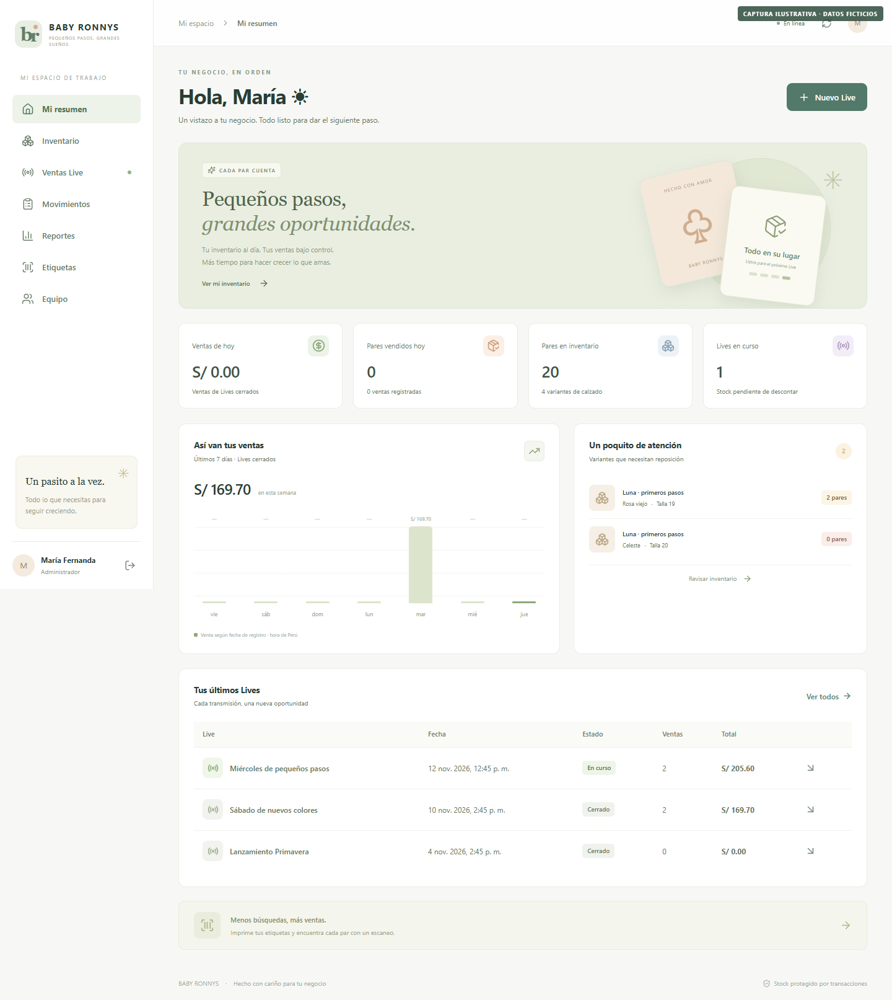
01 · Antes de empezar
La aplicación organiza los datos del negocio en un proyecto privado de Supabase. Cada integrante inicia sesión; no hay registro público.
Gestiona modelos, variantes, precios base, producción, ajustes de stock y accesos del equipo. También puede registrar ventas y cerrar Lives.
Consulta el inventario, crea Lives, registra y anula ventas abiertas, adjunta comprobantes, cierra Lives y consulta reportes.
El equipo activo comparte el inventario, los Lives y sus ventas. Las operaciones se sincronizan con Supabase.
En Supabase, elige Connect → React (variante Vite si aparece). Las librerías necesarias ya están instaladas en este proyecto.
Guarda en el archivo local .env la URL y la clave publishable. No pegues la clave en .env.example; ese archivo solo es una plantilla.
Reinicia Vite después de guardar. Si aún no existe un administrador, crea el usuario en Supabase Auth y activa su perfil con el procedimiento seguro del README.
sb_secret_ y service_role nunca van en el navegador ni en un archivo VITE_*. No compartas contraseñas. El archivo .env queda fuera de Git.02 · Inicio
Al iniciar sesión, Mi resumen presenta el estado del inventario y las ventas consolidadas. Los Lives que siguen abiertos muestran su demanda pendiente.
03 · Catálogo e inventario
El catálogo separa el diseño del calzado de cada variante. El modelo contiene SKU, nombre y precio base; una variante determina el color y la talla.
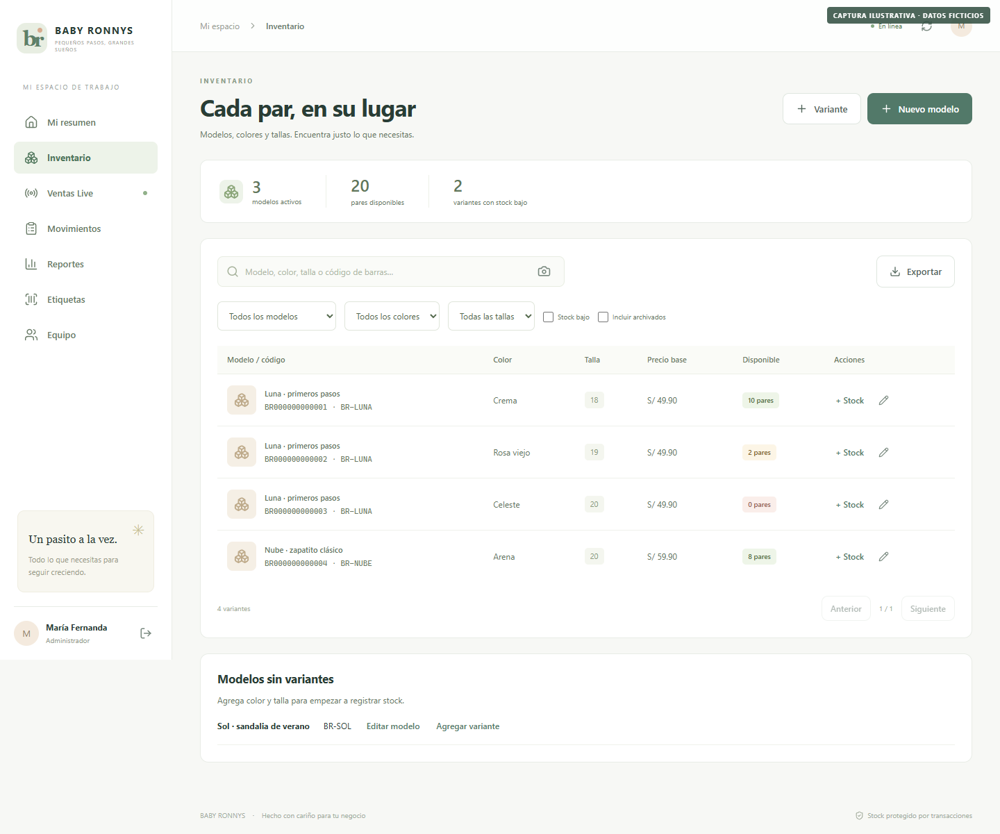
Selecciona Nuevo modelo. Registra un nombre legible, un SKU único y un precio sugerido. Editar ese precio más adelante no modifica las ventas ya guardadas.
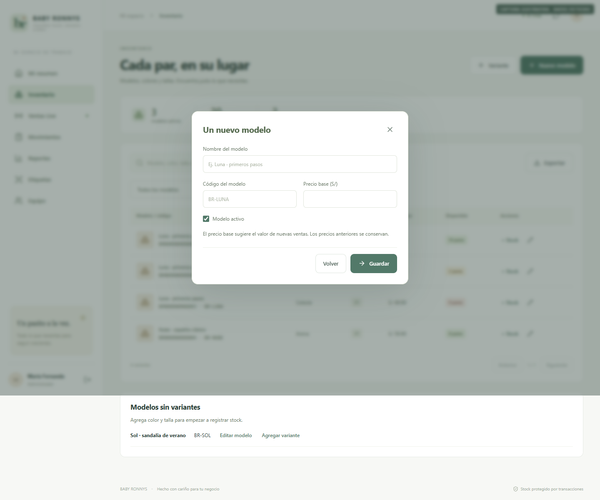
Selecciona Variante; elige el modelo y añade el color, la talla y el nivel mínimo para alertas. Puedes agregar tantas combinaciones como manejes.
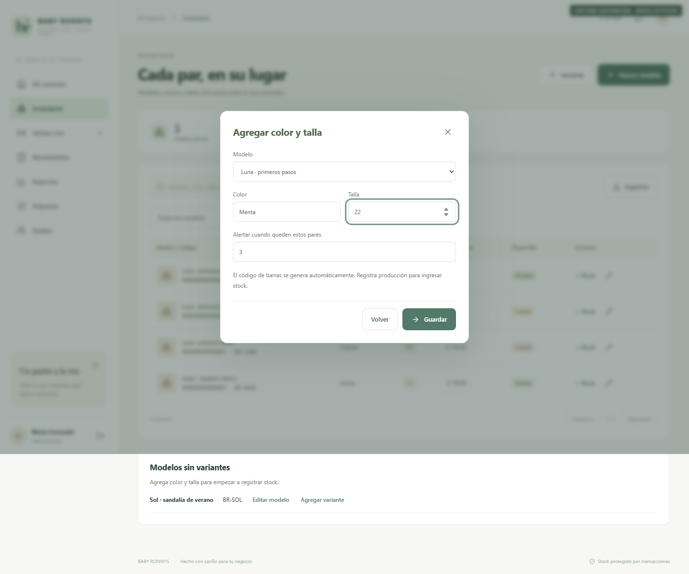
Las tallas admitidas en esta versión son enteras del 10 al 45. El barcode permanece asociado a la variante aunque edites el nombre comercial del modelo.
04 · Producción y stock
El administrador ingresa pares de producción y registra ajustes cuando el conteo físico no coincide. Cada cambio requiere un motivo y queda en el historial.
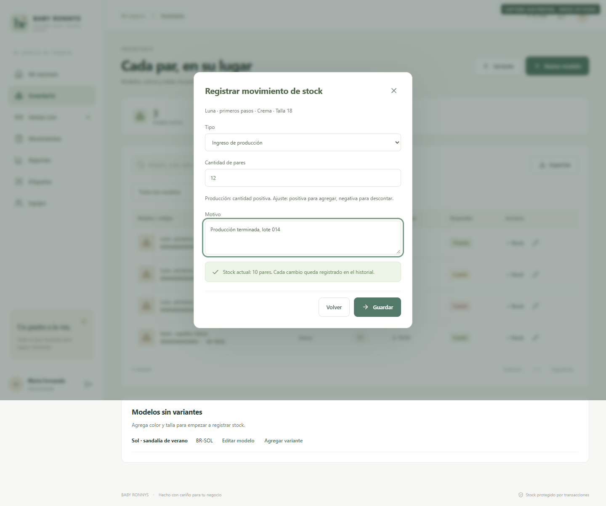
| Tipo | Cómo ingresar la cantidad | Ejemplo |
|---|---|---|
| Producción | Un entero positivo. | Ingresaron 12 pares → escribir 12. |
| Ajuste | Positivo para agregar o negativo para descontar. | Falta 1 par en el conteo → escribir −1. |
| Venta | La registra el sistema al cerrar un Live. | Se genera un movimiento negativo por variante. |
La página Movimientos permite filtrar por fecha y tipo, revisar el saldo después de cada operación y exportar el historial a CSV.
05 · Códigos de barras
El sistema asigna el Code 128 automáticamente cuando se agrega una variante: modelo + color + talla. Crear solo el modelo no basta.
BR000000000001Prefijo BR seguido por una secuencia de 12 dígitos: BR + 12 números. La base de datos asigna el número y comprueba que sea único.
El mismo barcode identifica todos los pares del mismo modelo, color y talla. El stock indica cuántos pares quedan.
En Etiquetas, el código de texto se dibuja como barras Code 128 y se imprime junto al nombre, color y talla.
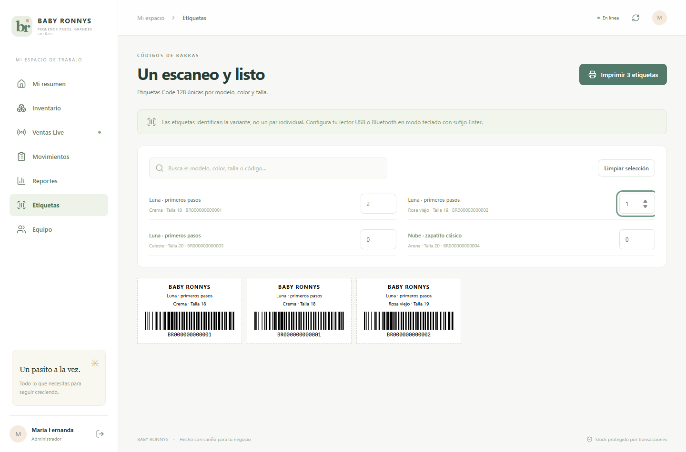
06 · Ventas Live
En Ventas Live se reúnen las transmisiones y sus ventas. El inventario no se reserva mientras el Live esté abierto.
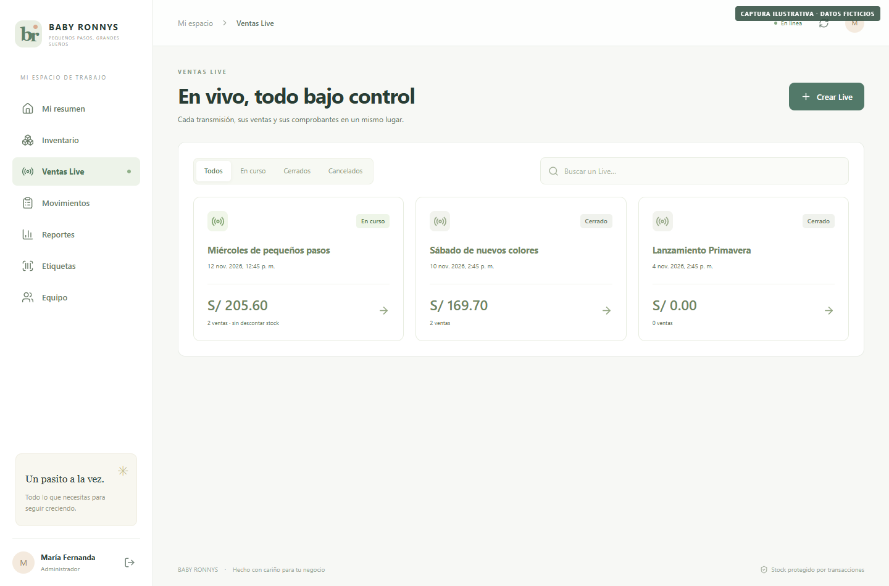
Pulsa Crear Live, escribe un nombre fácil de reconocer y crea la transmisión. El equipo activo puede colaborar.
Desde el detalle, elige Nueva venta. Registra el nombre o usuario del cliente, su medio de pago, las líneas y las notas de entrega.
Para agregar un par, escanea su etiqueta o busca por modelo, color, talla o código. Ajusta la cantidad y el precio de venta de cada variante si hace falta.
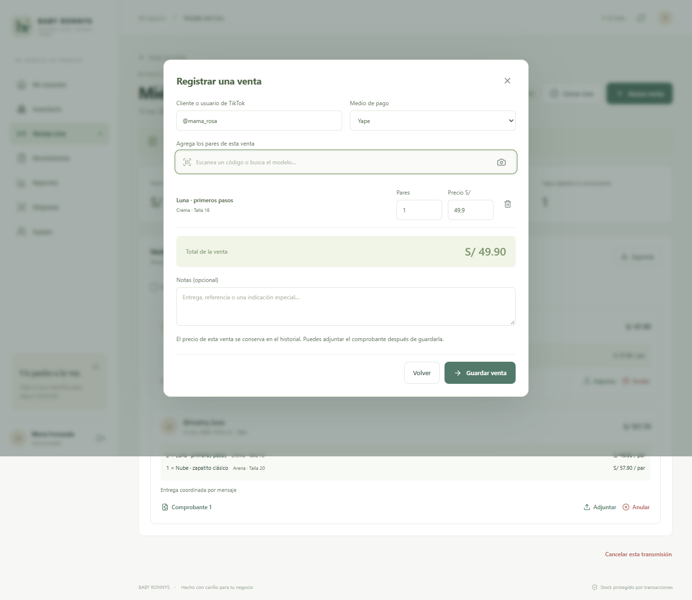
| Pago | Qué registra el sistema |
|---|---|
| Yape, Plin, transferencia o efectivo | El medio informado por el equipo. La aplicación no valida el depósito frente al banco. |
| Comprobante | Se adjunta después de guardar la venta. Las imágenes se comprimen y van a un bucket privado. |
07 · Comprobantes y anulaciones
El detalle del Live sirve como registro de clientes, pagos y archivos adjuntos. Una venta anulada permanece visible en el historial con su motivo.
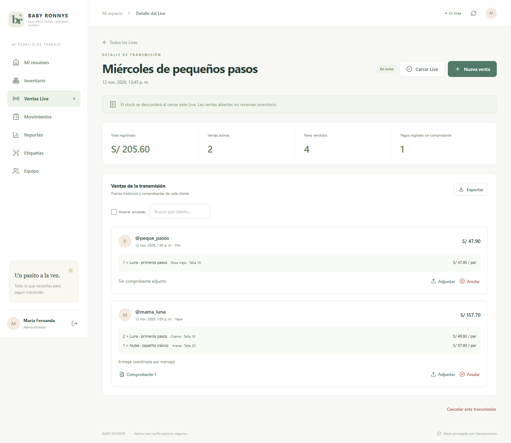
Los archivos vinculados se conservan en el historial. La imagen evidencia un pago, pero no verifica automáticamente su autenticidad.
Si necesitas corregir comprador, talla, pago o cantidad antes del cierre, anula la venta y registra la correcta.
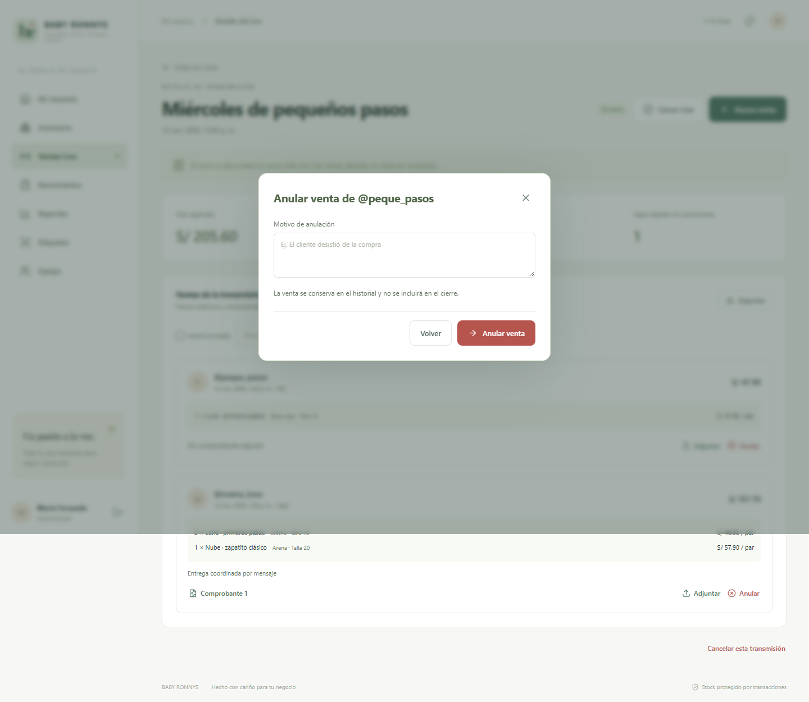
08 · Cerrar un Live
El cierre revisa las cantidades por variante en una transacción de PostgreSQL. Es el momento en que se descuenta el inventario.
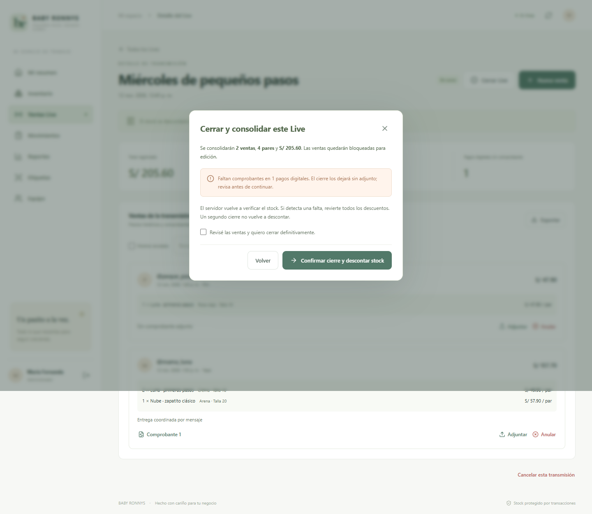
En el detalle, pulsa Cerrar Live. Revisa el resumen y confirma que se revisaron las ventas.
El servidor vuelve a verificar el stock, agrupa los pares por variante, resta la cantidad y añade movimientos. Todo ocurre junto.
Las ventas abiertas son demanda pendiente; no reducen el saldo todavía.
Un segundo intento de cierre reconoce que el Live ya está cerrado.
Las ventas no se editan y el Live no se reabre. Un ajuste de stock posterior requiere administrador y motivo.
Cancelar un Live requiere rol administrador y no puede haber ventas activas. Para retirar pares por una devolución física posterior al cierre, registra un ajuste documentado. Esta versión no tramita reembolsos ni facturas.
09 · Historial e informes
Filtra los registros del negocio y exporta la información disponible. El CSV de ventas incluye la fecha, el precio histórico, la variante, la cantidad y el medio de pago.
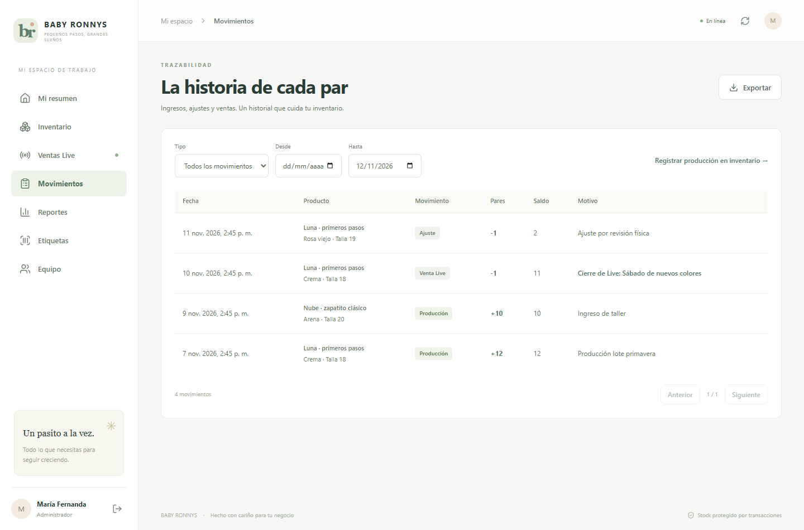
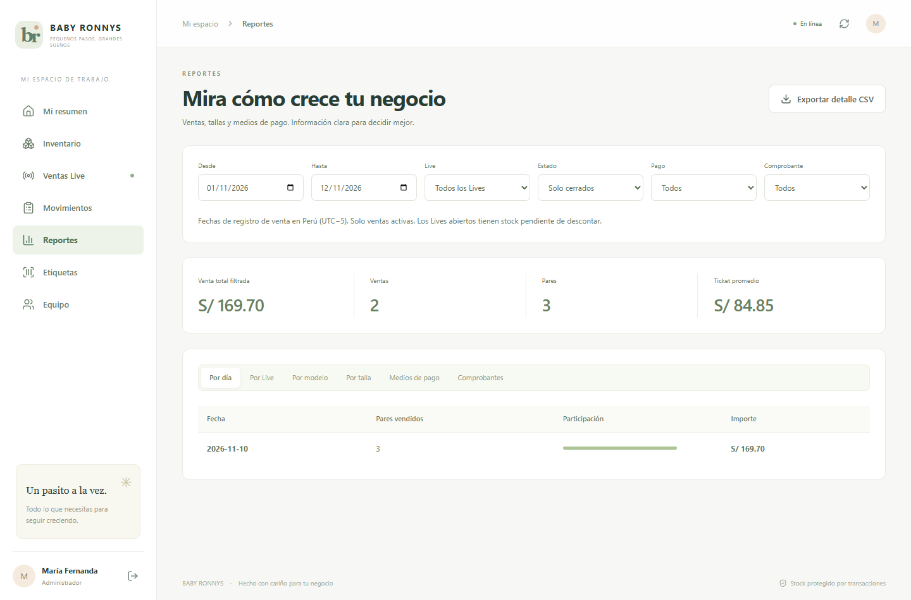
Los archivos CSV sirven para revisar en Excel. No reemplazan un respaldo completo de la base de datos ni incluyen las imágenes.
10 · Equipo y aplicación móvil
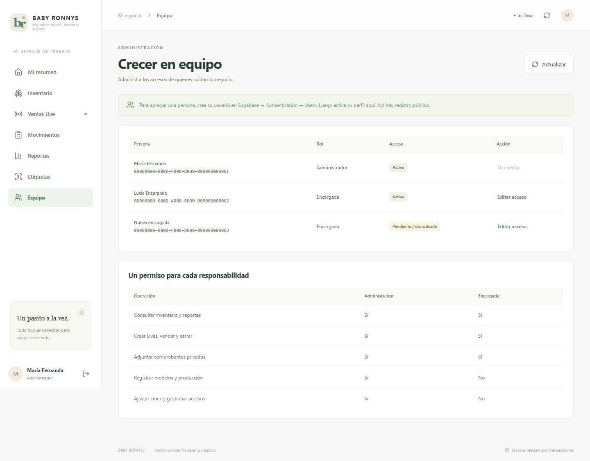
Un administrador no puede modificar su propio acceso. El rol administrador es el único que crea modelos, añade variantes, registra producción y gestiona integrantes.
En pantallas pequeñas, abre el menú con ☰. Usa la cámara de Inventario o de una venta para leer etiquetas. En iPhone/Android puedes agregar la aplicación desde el menú de compartir o el aviso de instalación del navegador, según el navegador y el dispositivo.
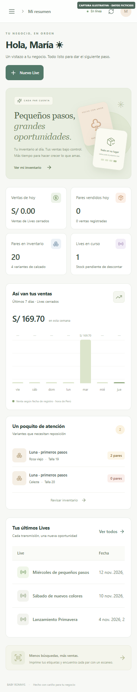
11 · Ayuda rápida
| Lo que ves | Qué revisar |
|---|---|
| «Conectemos tu negocio» | Comprueba que editas .env, no .env.example. Verifica las variables VITE_SUPABASE_URL y VITE_SUPABASE_PUBLISHABLE_KEY; reinicia Vite después de guardarlas. |
| No puedo iniciar sesión | Confirma correo/contraseña en Supabase Auth, revisa confirmación de correo y restablece la contraseña desde la pantalla de acceso. |
| «Tu acceso está pendiente» | Solicita a la administradora que active el perfil en Equipo. El primer administrador necesita el paso SQL seguro del README. |
| No puedo crear un producto o dar ingreso | Esas acciones requieren rol administrador activo. |
| El cierre no permite descontar | Revisa la variante y el saldo. Registra producción o anula con motivo la venta que no se concretó. |
| El lector no agrega la variante | Configura el lector en modo teclado con Enter y enfoca el campo de búsqueda. Si hace falta, escribe el barcode manualmente. |
| No abre la cámara | Permite el acceso y usa HTTPS o localhost; la cámara puede no estar disponible en navegación privada o en otro navegador integrado. |
| No abre un comprobante | El enlace temporal caduca en 2 minutos. Vuelve a pulsar el archivo para solicitar otro enlace mientras tienes sesión activa. |
La conexión con TikTok y la verificación automática de Yape/Plin no forman parte de esta versión. Las ventas y el estado de pagos los registra y revisa el equipo.
Este manual corresponde a la versión 1.0 del sistema BABY RONNYS. Las capturas usan datos de ejemplo generados exclusivamente para documentación y no representan clientes ni transacciones reales.